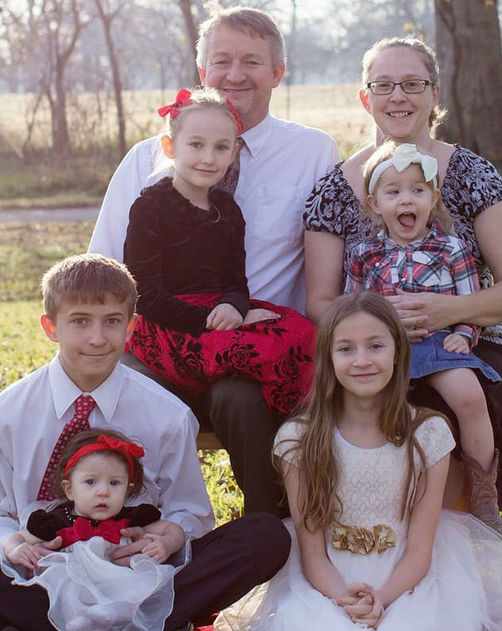

Hover over me to watch my family grow is size, literally, not figurativly. When you take the mouse off the picutre, we shrink.
This will take the picture of my little one and make her grow and spin, when you hover over her with the mouse.
Depending on what timing function you are using, the picture will stretch out in different speeds.